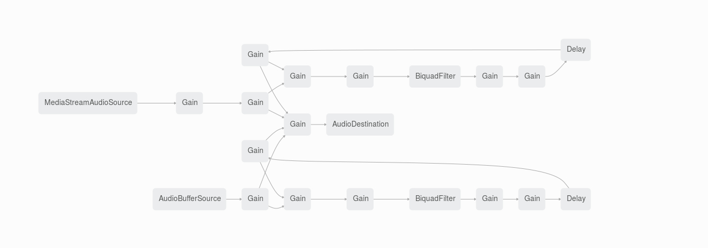

An example of snd-elements.
This example is "<snd-buffer>", "<snd-stream>", "<snd-delay>", "<snd-filter>" and "<snd-gain>".
"<snd-buffer>" is a "Audio File Input" element.
That loads some audio file (like .mp3, .wav, etc..) and play with "start()" method.
"<snd-stream>" is a "Mic Input" element.
That call Navigator.getUserMedia automatically.
And call "onsuccess" attribute or "onerror" attribute.
"<snd-delay>", "<snd-filter>" and "<snd-gain>" makes "Delay Echo" effect.
Please say something to your microphone or click "Fire!!" button.
Source:
<snd-delay id="micEchoDelay" delayTime="0.5" connect="#micEchoGain, MASTER"></snd-delay>
<snd-filter id="micEchoFilter" type="lowpass" frequency="200" connect="#micEchoDelay"></snd-filter>
<snd-gain id="micEchoGain" gain=0.5 connect="#micEchoFilter"></snd-gain>
<snd-delay id="bufferEchoDelay" delayTime="0.5" connect="#bufferEchoGain, MASTER"></snd-delay>
<snd-filter id="bufferEchoFilter" type="lowpass" frequency="200" connect="#bufferEchoDelay"></snd-filter>
<snd-gain id="bufferEchoGain" gain=0.5 connect="#bufferEchoFilter"></snd-gain>
<snd-buffer id="lasorSound" src="./sound/28917__junggle__btn107.wav" connect="MASTER, #bufferEchoGain" onload="onSoundLoaded(_this);"></snd-buffer>
<snd-stream id="streamSound" connect="MASTER, #micEchoGain" onsuccess="onStreamSuccess(_this);" onerror="onStreamError(_this, _err);"></snd-stream>
Connection:
That elements makes this connection.
